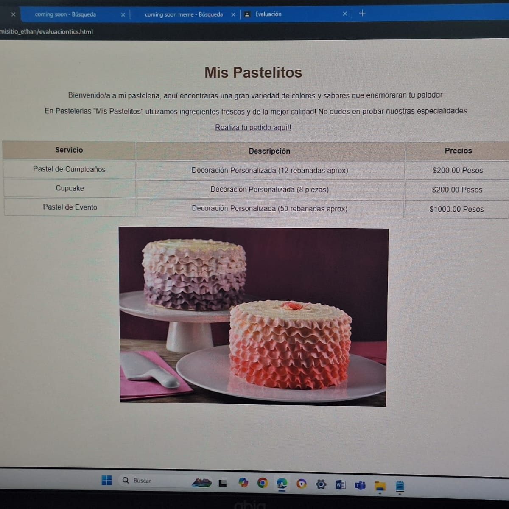
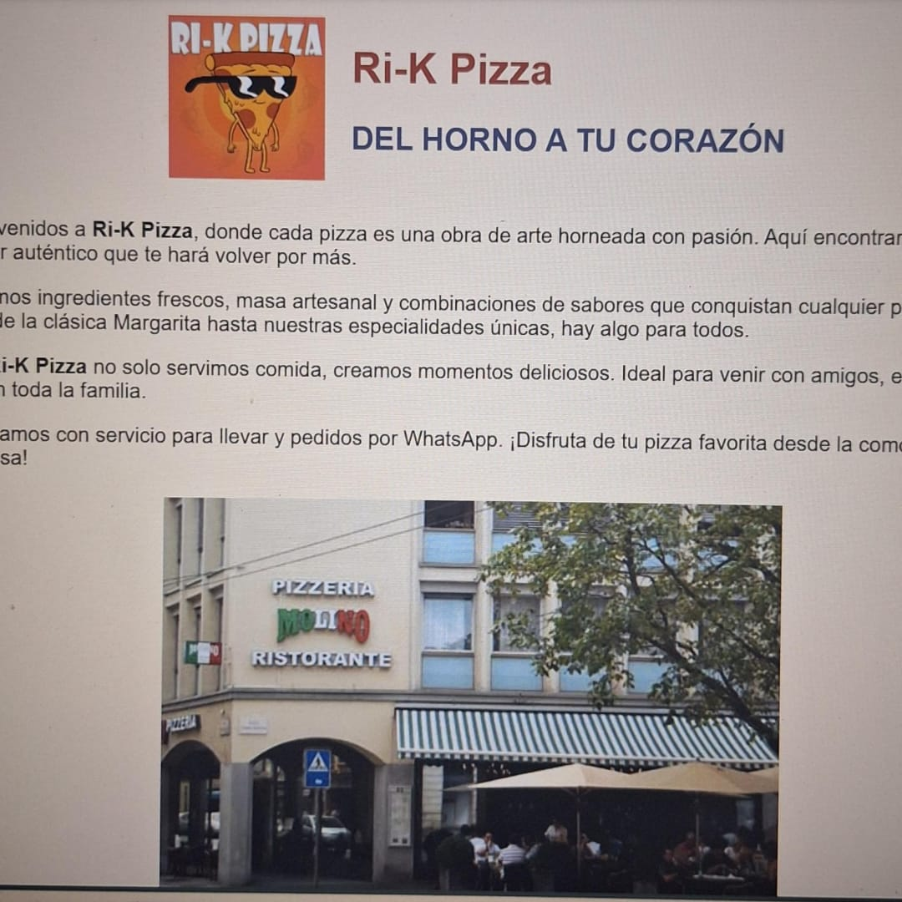
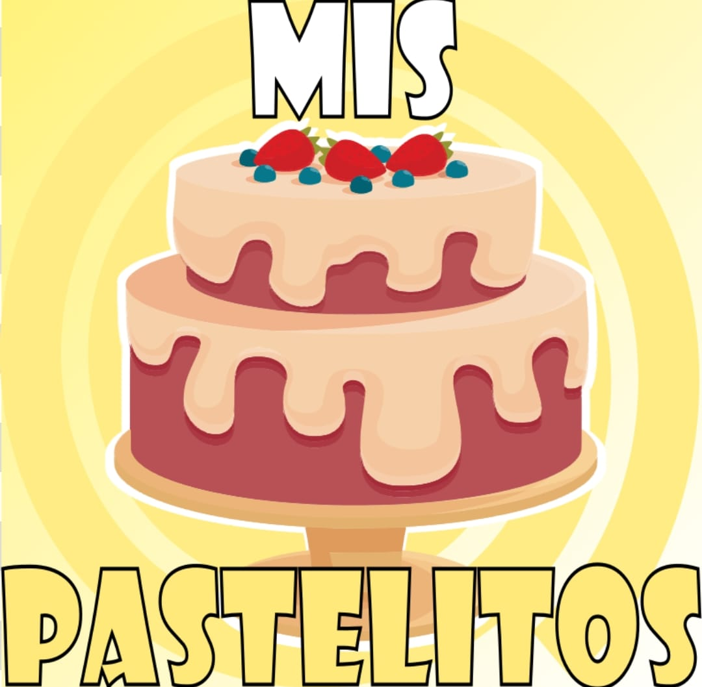
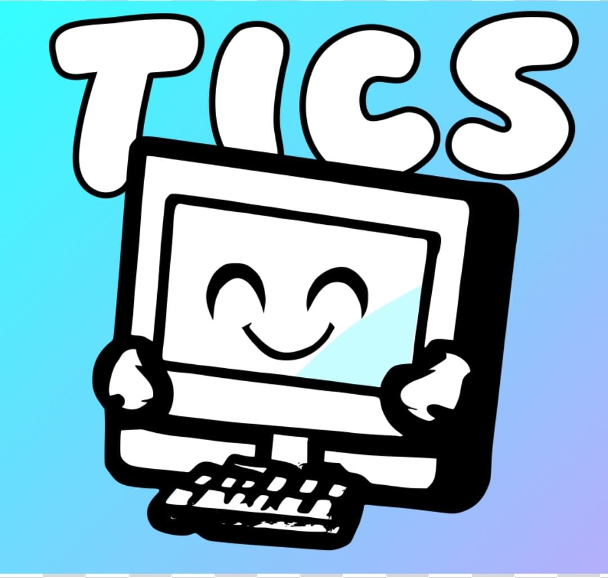
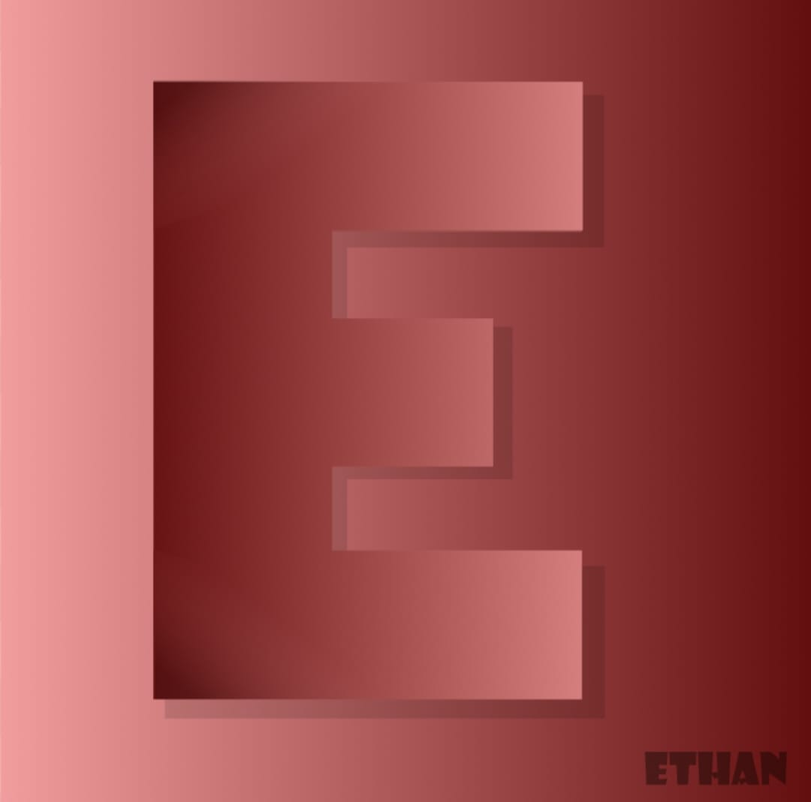

Explora nuestros proyectos y aprendizajes
Lo que encontrarás a continuación son algunos de los trabajos que realizamos en nuestro ultimo semestre de Bachillerato, estos trabajos incluyen varias materias y a su vez exponen cómo nos desarrollamos individualmente en nuestra capacitación de TICs. El principal motivo de desarrollar estos trbajos es que nosotros individualmente hagamos realidad nuestra ideas tras leer las instrucciones de la maestra, es decir, no seguir indicaciones especificas a la hora de realizarlos, sino que de acuerdo a nuestra imaginación nosotros realizamos cada actividad a nuestra manera.
|  |  |  |  |  |